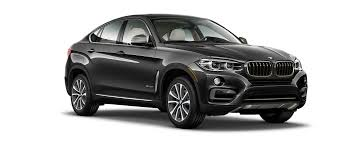

| BMW X6 | |
|---|---|
| more photo | Мощный и атлетичный. Солидный как модели серии X и спортивный как купе. BMW X6 сметает все границы. Его мощные двигатели BMW TwinPower Turbo из программы BMW EfficientDynamics объединяют в себе динамику и экономичность, а система интеллектуального полного привода BMW xDrive обеспечивает отличные характеристики на любой дороге. Пакеты дизайна Pure Extravagance и благородные материалы придают автомобилю впечатляющий внешний облик и поразительную функциональность. |
| Porsche Cayenne | |
|---|---|
| more photo | Porsche Cayenne — пятиместный среднеразмерный спортивный кроссовер производства немецкой автомобилестроительной компании Porsche. Автомобиль создан при активном участии концерна Volkswagen. Производство первого поколения (Type 955/9PA) началось в 2002 году, в Северной Америке реализация началась с 2003 года. Название модели, Cayenne, образовано по имени столицы Французской Гвианы. |